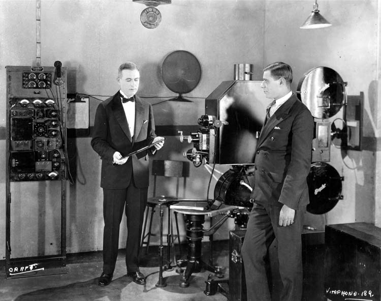
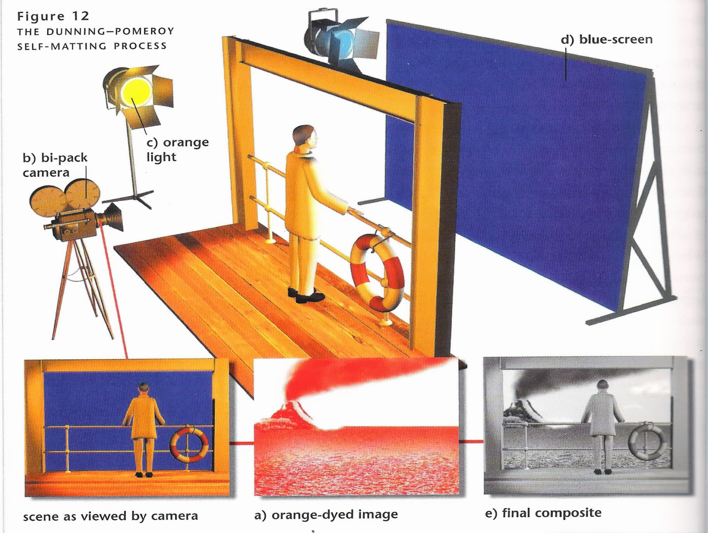

L'apparition du son au cinéma
Du son sur dique est ajouté sur les images filmées dès 1895 où William Kennedy et Laurie Dickson réalisent le premier essai de film musical. Dès lors, le son est omniprésent sous forme musicale. La musique est parfois même synchronisée avec les événements à l'image. Mais les bruitages sont créés dans certaines salles directement durant la projection, et les dialogues sont sous forme d'intertitres. En 1927, The Jazz Singer déboussole le public. En utilisant le Vitaphone qui couple 10 minutes de film avec 10 minutes de disques gravés, ils font chanter le personnage principal, mais surtout parler. C'est la première fois qu'un personnage parle dans un film. Le Vitaphone n'est cependant pas viable et est vite remplacé par une technique pourtant ancienne : le Son sur film. Même si le procédé a été inventé et breveté en 1910 par Eugène Lauste, ce n'est qu'en 1928 que le son enregistré sur bande commence à prendre de l'ampleur et détrône le Vitaphone. La Fox Film Corporation reprend l'invention de Lauste dont le brevet a expiré, et le système de son enregistré photographiquement sur la pellicule va imposer le cinéma sonore très rapidement. Les studios de cinéma et les salles de projection sont alors insonorisées et modifiées en conséquence.
Les conséquences sur les effets spéciaux
Les machines utilisées sont lourdes, et captent tous les bruits parasites. Il devient nécessaire avec l'arrivée du son de tourner quasiment tous les dialogues en studio, voire toutes les scènes. Le compositing, le matte-painting sont devenus les effets spéciaux essentiels pour placer les acteurs studio dans des décors extérieurs. Filmés sur fond noir, ils sont ensuite ajoutés dans une forêt ou un champs et le son est ajouté artificiellement. En plus de pouvoir recréer les sons d'ambiance d'extérieur, on peut également créer des sons extra-ordinaires ou fantastiques
Le procédé Dunning-Pemoroy
Parmi les techniques de matting, le procédé Dunning-Pemoroy utilisé dans King Kong en 1933 était un procédé unique et minutieux. Le fond est photographié, et ses négatifs sont teints en orange et utilisés dans un processus d'impression positive. L'impression orange du fond est placé devant un négatif vierge et le premier plan est filmé en studio. Il est éclairé par une lumière orange et filmé sur fond bleu. Le résultat donne une superposition mais n'est pas parfait.
The jazz singer, Alan Crosland, 1927.
Le Vitaphone.
Le procédé Dunnind-Pomeroy.
